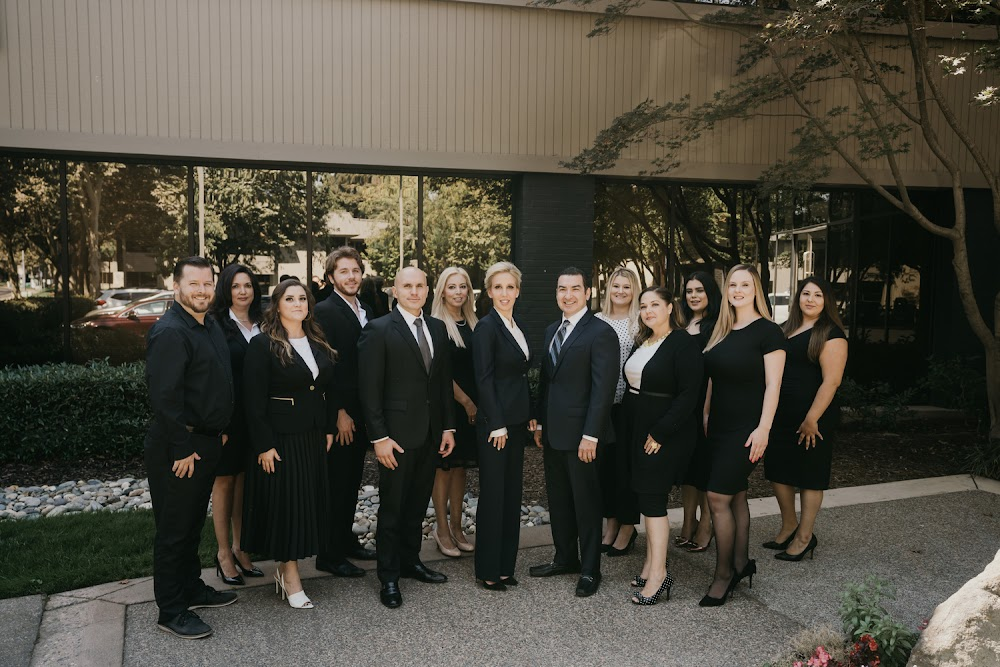

Immediate Decisions After An Accident
Give each request a considered response rather than agreeing to everything at once. Contact sacramento personal injury lawyers before responding to a request for a recorded statement, and ask for enough time to understand the question and its purpose. If discomfort, anxiety, or other symptoms emerge, consult a qualified provider and retain the instructions and appointment details that relate to it. Before accepting money or signing a release, ask sacramento personal injury lawyers to explain the terms and any practical effect they may have.
Communication can become confusing when several people or companies seek information at once. Choose one reliable way to handle messages, read each document carefully, and keep an organized record of appointments, calls, and promised follow-ups. sacramento personal injury lawyers may help you frame questions for an insurer or service provider, while sacramento personal injury lawyers can review language that seems broad, rushed, or unclear. Avoid public speculation and keep sensitive discussions in appropriate private channels.
Your choices should also account for daily needs, including transportation, household duties, and ordinary commitments. Ask for help with routine tasks when necessary, and give yourself room to consider advice instead of reacting to pressure. A private discussion with sacramento personal injury lawyers can help you weigh a proposed response without committing before you understand it. Organized communication and measured judgment can make the situation easier to manage.

Why Timely Medical Care Matters
After an unexpected health event, a clinical assessment can establish a baseline, identify concerns that are not immediately visible, and guide decisions about follow-up. sacramento personal injury lawyers may help a person prepare practical questions about available support, while sacramento personal injury lawyers can clarify which issues belong with a healthcare professional and which may require separate advice. This division of roles keeps medical decisions grounded in clinical expertise and helps the individual approach the next stage with realistic expectations.
Good communication also supports continuity. Sharing relevant history, medications, allergies, and changes in daily function gives clinicians useful context, and asking for an explanation of proposed treatments can make it easier to participate in care. sacramento personal injury lawyers can help organize nonmedical questions, while sacramento personal injury lawyers may offer perspective on how scheduling, transportation, cost, or time away from routine could affect a person's options. No outside adviser should replace the judgment of a licensed medical professional.
Recovery plans are often more manageable when responsibilities and practical constraints are considered together. A person may need to coordinate transportation, arrange assistance at home, or understand how referrals and coverage work before choosing among available services. sacramento personal injury lawyers can provide guidance on those broader concerns while the patient follows the treatment plan developed with qualified clinicians.
Understanding Recorded Insurance Statements
An insurer may ask for a recorded account shortly after a collision, workplace event, or other covered occurrence. Before agreeing, sacramento personal injury lawyers can help a person understand whether the request is routine, what topics are likely to arise, and whether a representative should be present. The speaker should review available records, separate firsthand knowledge from assumptions, and avoid guessing when a detail is uncertain. Clear, concise answers are generally more useful than speculation, and any correction should be made promptly if an error is discovered. sacramento personal injury lawyers may also help preserve a consistent account while the facts remain fresh.
A recorded account can become part of the insurer's file and may later be compared with records, incident reports, photographs, messages, or testimony. For that reason, sacramento personal injury lawyers can explain the practical significance of wording, timing, and scope before the conversation takes place. It is sensible to confirm who will conduct the interview, whether it will be recorded, and what claim or policy issue it concerns. During the call, sacramento personal injury lawyers should listen carefully, request clarification for compound questions, and ask for a pause if needed to check a document. The goal is not to recite a prepared script, but to give accurate information without adding unsupported conclusions.
Good preparation also includes keeping the request, scheduling messages, and any materials reviewed before the interview. If the subject matter involves disputed responsibility, serious losses, or uncertainty about coverage, sacramento personal injury lawyers can help evaluate the next step and identify questions that warrant qualified advice. A person should never alter records or coordinate accounts with others, but should preserve relevant information and communicate changes openly. Careful preparation supports a fair review while allowing the insurer to obtain the facts it reasonably needs.
Tiemann Law Firm
Tiemann Law Firm
1500 River Park Dr, Sacramento, CA 95815
(916) 999-9000